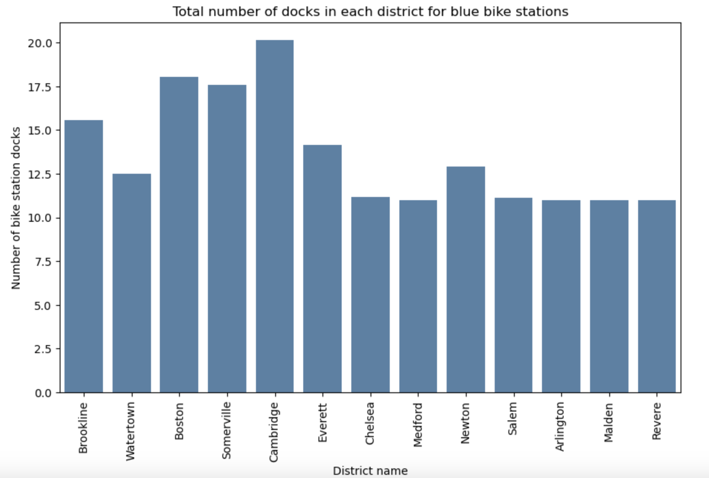
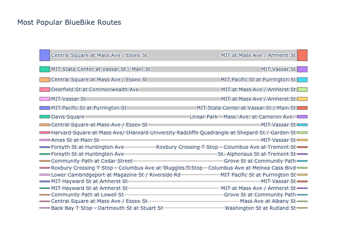
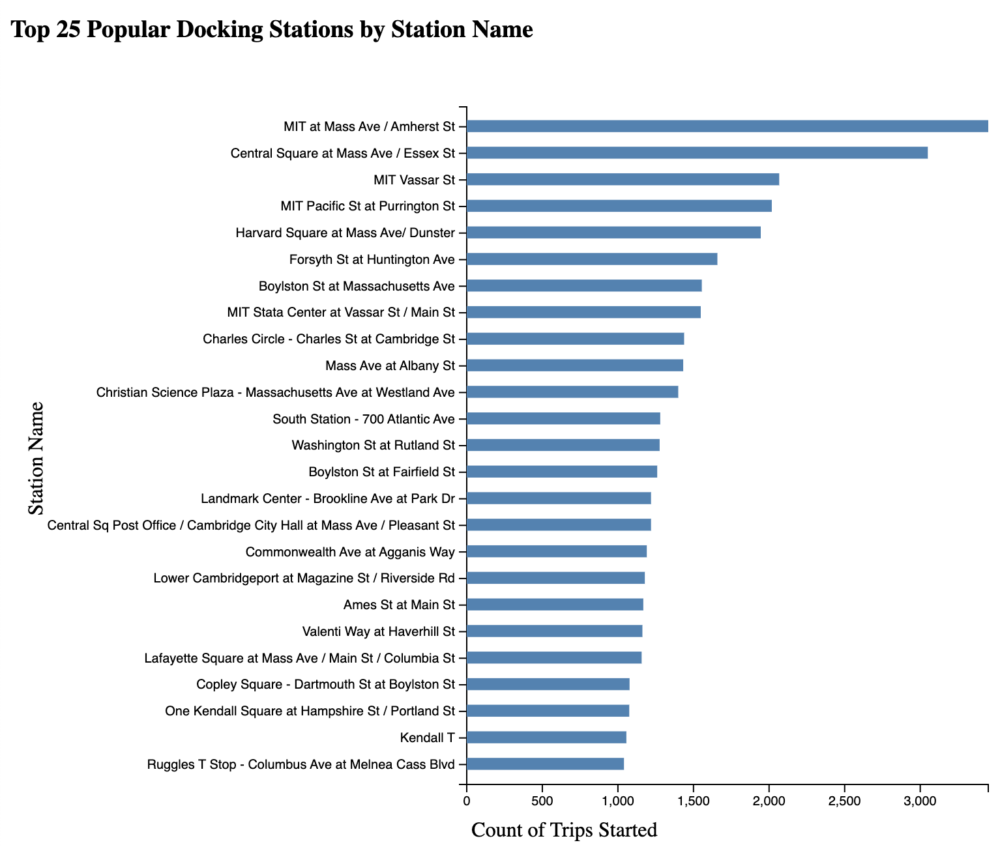

Can BlueBike Data Reveal Inefficencies?
By Heidi Eren, Cameron Burke, Conor Doyle
Overall Introduction
Exploring the inefficiencies within the MBTA system is a vital step towards enhancing its operations and meeting the
diverse needs of commuters across MA. Our project focuses on analyzing BlueBike rider trips to reveal which routes
the MBTA may be lacking in, given the greater frequency in bike trips for those routes. With further insight into
the frequency and popularity of bike routes, the data can introduce routes that the MBTA can incorporate or focus
more on. Hence, this analysis can provide valuable insights into potential gaps in the MBTA system, highlighting
areas where adjustments or enhancements are needed to better serve commuters.
This investigation can ultimately identify rider patterns as a means to improve local boston transportation.
Understanding which routes experience higher volumes of bike trips can help pinpoint opportunities for the MBTA to
optimize its services and improve overall transit efficiency. By addressing inefficiencies within the MBTA system,
we can work towards creating a more equitable and accessible transportation network that benefits all members of the
community.
To supplement our initial idea, we researched some of the possible issues with the MBTA in its current state. We came
across a number of articles that outlined how the MBTA needs to expand its routes to help out those living in and
around Boston. This article
from The Boston Globe outlines some of these
problems, “Fixing the T is not enough. We
need a massive expansion.”
Additionally, we wanted to see if there were already any existing relationships between Boston MBTA services and
BlueBikes. An article
from Boston.com outlines both the issues Bostonians are seeing with the MBTA, and how
BlueBikes have started to provide a solution, “Wu announces program to slash Bluebikes prices by more than half for
residents.” Using the information from these two articles, we are excited to further explore BlueBike data and see
how it could reveal any inefficiencies in the current MBTA services.
Introduction to the Data
From Bluebike, we make use of two datasets: ‘current_bluebike_stations.csv’ that contains the name, latitude,
longitude, district, and number of docking stations for every Bluebike station (421 rows by 7 columns) and
‘202301-bluebikes-tripdata.csv’ (140340 rows by 14 columns) that contains the comprehensive trip histories including
the start/stop time, trip duration, start/end station name and location, and usertype.
From Mass.gov, we make use of four additional datasets, two per type of transportation. For bus data, we utilized
‘MBTABUSROUTES_ARC.shp’ for bus route description and length (linestring for geopandas) and ‘MBTABUSSTOPS_PT.shp’
for bus stop name, district, and location (point for geopandas). For train data, we utilized ‘MBTA_ARC.shp’ for
train line, route, and length (linestring) and ‘MBTA_NODE.shp’ for train station, line, route, and location (point).
The features for the Bluebike datasets are previewed in the following table:
| Variable Name |
Details |
| Tripduration |
Trip Duration (seconds) |
| Startime |
Start Time and Date |
| Stoptime |
Stop Time and Date |
| Start_station_id |
Station ID |
| Start_station_name |
Start Station Name |
| Start_station_longitude |
Station Longitude |
| Start_station_latitude |
Station Latitude Values |
| End_station_id |
Station ID |
| End_station_name |
End Station ID |
| Bikeid |
Unique BikeID |
| UserType |
Customer Segment of BlueBike Rider (Casual or Memember) |
| Postalcode |
Postal Code of Start Station |
| Variable Name |
Details |
| STOP_ID |
Unique MBTA Stop Identifier |
| STOP_NAME |
MBTA Name of Bus Stop |
| TOWN |
Name of City |
| STATION |
Name of MBTA Transit Station |
| LINE |
Name of MBTA Transit Line |
| ROUTE |
Beginning and End Station of Transit Route |
Interactive Visualization for our Overall Data
To compile and overlay data from both Bluebike and MBTA, we created an interactive Folium map that visualizes
the coordinates and routes for the various modes of transportation. The various layers can be toggled on or
off in the top right hand corner. The blue points represent the start bike trip locations (indicating the
blue bike station used), which a user can hover and learn more regarding the bike station name and frequency.
The MBTA lines are featured as routes in their respective colors (Red line is red, etc). The bus icons represent
the MBTA bus stops that are color coordinated by district name. The bus routes are also shown as lines along
the bus stops. By examining the proximity of Bluebike trips with respect to MBTA bus and train stations,
the map can geographically portray which MBTA transit routes should be addressed or which routes should be
implemented.
Looking at BlueBike Data for Different District
We can see from our BlueBike data that there is data from many different districts in Massachusetts, not just
Boston. We can't do analysis on all the districts, since the data is geographically spread out, which will make
visualizations difficult to understand. We need to choose a district or two to really focus on, so we can get a
clear understanding of what the data is telling us. To determine which district to choose, we plotted out the total
number of docking stations in each district that was included in our BlueBike data. Frrom the bar plot below, we can
see that Boston and Cambridge are the two areas with the most BlueBike docks. Therefore, we choose these areas to
focus on because they are geographically close together, and they are relevant for our analysis because of how
popular BlueBikes are in these areas.

Understanding Popular BlueBike Routes

Once we collected and pre-processed our data, our group decided to make a static Sankey visualization to get
a better understanding of popular BlueBike routes. We picked Sankey because a viewer can easily discern the
two stations that the visualized routes run between. In addition, each connection looks like a route, with
the start station, end station, and a thickness of the connection determining the popularity. We can see
from this diagram that the most popular BlueBike route is between Central Square at Mass Ave/Essex St, and
MIT at Mass Ave/Amherst St. The second most popular route is between MIT Stata Center at Vassar St/Main St
and MIT Vassar St. The third most popular route is between Central Square at Mass Ave/Essex St and MIT
Pacific St at Purrington St. We can now follow the logic and hypothesis that we initially set out on: the
MBTA transit around these popular routes should be investigated and possibly improved, because we determine
from this Sankey diagram that these are areas with high BlueBike usage, and therefore possibly less transit
usage.
Looking at Popular BlueBike Docking Stations
The bar chart visualizes the most popular BlueBike Stations based on the total number of trips started within
the time frame. The chart illustrates that the station with the most trips started was at MIT at Mass Ave/
Amherst Street. Both this station as well as the second most popular station (Central Square at Mass Ave/
Essex St) both have over 3000 trips started at these locations. The five most popular BlueBike stations have
over 2,000 trips started. After the initial five stations there is a gradual decline in trips started with
the final station in the visualization representing 1,000 trips started. Understanding which docking
stations have the highest count of trips initiated gives us an understanding of potential areas the MBTA can
improve its overall efficiency.

We have also create an interactive Altair scatter plot that included the closest MBTA transit stations to the user's
chosen BlueBike Station. Since this is an Altair plot, users can use their mouse to scroll over the different
plotted BlueBike stations. Included in each tooltip that pops up is the computed closest MBTA bus station and train
station. Use your tooltip to hover over the largest circles (the most popular docking stations found in our last
plot) to see the closest MBTA transit stations.
Summary and additional work
We understood from the start of this project that the MBTA system can definitely be improved upon. It was the
ultimate goal of ours to come up with specific ways that the MBTA can make these improvements. Based on our analysis
on BlueBike data, we determined that the MBTA can improve the transit in areas where BlueBike docks and usage are
popular.
The logic behind this conclusion is pretty clear: if BlueBike is popular in an area with both MBTA transit options
as well as BlueBike options, we believe it means that people are choosing to take the BlueBikes instead of MBTA
transit, indicating that there is something wrong with the transit.
We do still have weaknesses in our conclusions. Our first weakness lies within our data. We only got BlueBike data
for January of 2023. To come to more of a concrete conclusion, this project should consider a much larger time
period, perhaps overall several years of BlueBike usage. Another weakness our conclusion has it is based upon the
idea that if an area has a lot of BlueBike usage, it means that the transit in that area is inadequate. It may
simply be the case that both the BlueBike and transit are popular! To combat this, the project should consider MBTA
transit usage, which we could not find. This would allow us to compare BlueBike usage to transit usage. A future
iteration of this project should use this data.
We learned from the data visualizations that the following BlueBike docking stations are the most popular:
- MIT at Mass Ave/Amherst St
- MIT at Mass Ave/Amherst St
- MIT Vassar St
Therefore, the MBTA should look to either expand routes to these areas, or improve upon already existing transit in
these areas.
Additionally, we learned that the above popular BlueBike docking stations have these closest public transit
stations:
- Mass Ave @ Memorial Dr, Pearl St, Amesbury @ Vassar St (bus)
- Kendall/MIT, Central on Red line (train)
- BU East on Green line (train)
Therefore, the MBTA should check to see if there is something wrong with these stations, because near these transit
stations, people are choosing to take BlueBikes.
We are happy with our findings and we worked hard to produce the visualizations. In the future, we think a good path
for this project would be to package all of our analysis and visualizations into an algorithm that can be applied to
any city in the world. As long as a user has bike data and transit data similar to what we have, they could use this
algorithm to generate analysis on their own city.